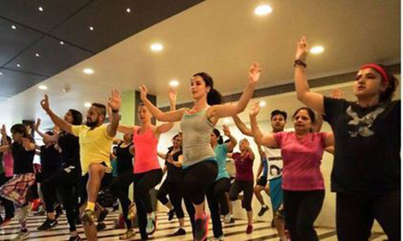
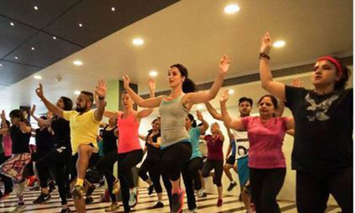

The Cult.fit Gym
Take care of your body. It's the only place you have to live
Indoor and Outdoor Training


Exercise and rest are the cornerstones of improving your quality of life. It's not always easy but it's always worth it. When you find a fitness routine you enjoy, you'll feel better, look better and be happier in your own skin.
Cycling is a great form of exercise as well as a practical way to get around, but it also carries the risk of significant injury, especially head injury. involves using a special stationary exercise bicycle with a weighted flywheel in a classroom setting.
Cardio Fitness and Cardiokick Boxing

Cardio fitness is important to everyone. Quality cardio workouts can help everybody reach their health and fitness goals, whether those goals include new personal records for competition, lowering blood pressure, reducing cholesterol levels, managing diabetes.
Kickboxing not only gives you that fab figure, but also makes you stronger. Kickboxing has been a rage with fitness enthusiasts for some time now. For many people, it is a 'cool' workout option compared to gymming, which can be monotonous.
Circuit Training and Bhangra
 

Circuit training is a fast-paced class in which you do one exercise for 30 seconds to 5 minutes and then move on to another exercise. Increases your strength and aerobic fitness and burns lots of calories. It's like a game where Everyone begins at a station.